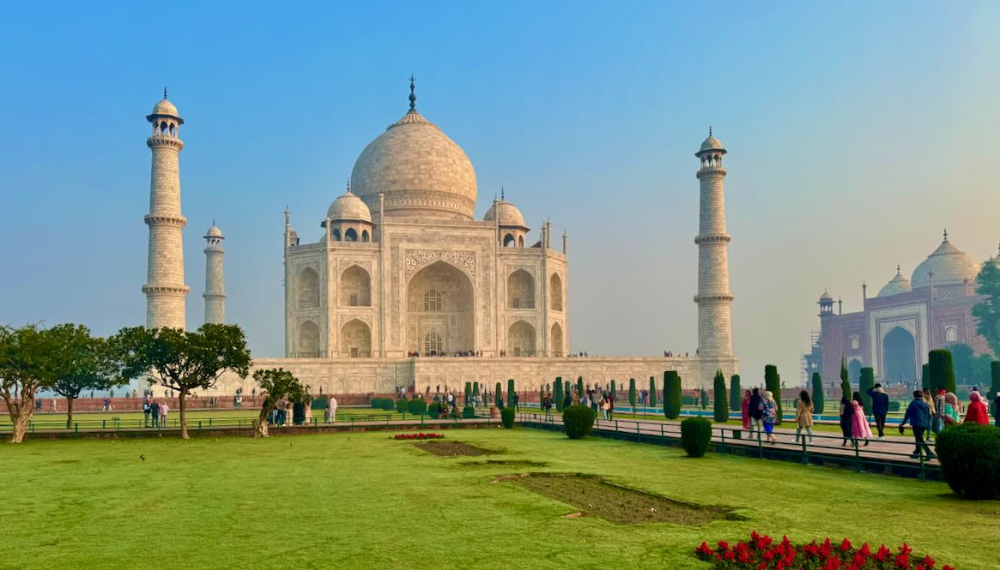

Bienvenue sur notre site dédié aux merveilles du monde !
Explorez avec nous les trésors les plus emblématiques de notre planète. Du majestueux Grand Canyon aux États-Unis, une merveille naturelle sculptée par des millions d'années d'érosion, à l'éblouissant Taj Mahal en Inde, un symbole éternel d'amour et de beauté. Plongez dans l'histoire ancienne avec la Pyramide de Khéops en Égypte, une prouesse architecturale qui défie le temps, et le Colisée de Rome, un témoignage impressionnant de la grandeur de l'Empire romain. Enfin, laissez-vous envoûter par le mystère du Machu Picchu au Pérou, une cité inca perchée dans les Andes qui continue de fasciner les explorateurs du monde entier.
Rejoignez-nous pour un voyage inoubliable à travers ces sites extraordinaires, où chaque destination raconte une histoire unique et captivante. Préparez-vous à être émerveillé par la beauté et la grandeur de ces merveilles du monde, et à découvrir les secrets et les tr
ésors cachés qui les rendent si spéciaux. Bienvenue dans un monde de découvertes et d'aventures, où chaque site historique vous réserve une surprise inattendue et une expérience inoubliable. Prêt à explorer ?
Le Grand Canyon
Le Grand Canyon est une formation géologique spectaculaire située en Arizona, aux États-Unis. Il est célèbre pour ses vues à couper le souffle et ses paysages impressionnants.
Explorer...>

Le Machu Picchu
Le Machu Picchu est une ancienne cité inca située au Pérou. Perchée dans les montagnes des Andes, elle est connue pour ses ruines bien préservées et son histoire fascinante.
Explorer...>

Le Colisée
Le Colisée est un amphithéâtre emblématique situé à Rome, en Italie. Construit au premier siècle, il est l'un des monuments les plus célèbres de l'Empire romain.
Explorer...>
Le Taj Mahal
Le Taj Mahal est un mausolée emblématique situé en Inde. Construit au XVIIe siècle, il est célèbre pour son architecture élégante et sa signification historique.
Explorer...>
